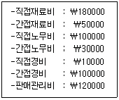
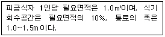

한식조리기능사 (2009-01-18 기출문제)
1과목: 식품위생 및 법규
1. 다음 중 보존료가 아닌 것은?
- 안식향산(Benzoicacid)
- 소르빈산(Sorbic acid)
- 프로피온산(Propionic acid)
- 구아닐산(Guanylic acid)
(정답률: 55%)

2. 식품등의 표시기준상 과자류에 포함되지 않는 것은?
- 캔디류
- 츄잉껌
- 유바
- 빙과류
(정답률: 63%)
3. 그 질병으로 인하여 죽은 동물의 고기·뼈·젖·장기 또는 혈액을 식품으로 판매하거나 판매할 목적으로 채취·수입·가공·사용·조리·저장 또는 운반하거나 진열하지 못하는 질병과 관련이 없는 것은?
- 리스테리아병
- 살모넬라병
- 선모충증
- 아니사키스
(정답률: 56%)
4. 다음 중 식품위생법령상 위해평가대상이 아닌 것은?
- 국내·외 연구·검사기관에서 인체의 건강을 해할 우려가 있는 원료 또는 성분 등을 검출한 식품 등
- 바람직하지 않은 식습관 등에 의해 건강을 해할 우려가 있는 식품 등
- 국제식품규격위원회 등 국제기구 또는 외국의 정부가 인체의 건강을 해할 우려가 있다고 인정하여 판매 등을 금지하거나 제한한 식품 등
- 새로운 원료·성분 또는 기술을 사용하여 생산·제조·조합 되거나 안정성에 대한 기준 및 규격이 정하여지지 아니하여 인체의 건강을 해할 우려가 있는 식품 등
(정답률: 81%)
5. 5'-이노신산나트륨, 5'-구아닐산나트륨, L-글루탐산나트륨의 주요 용도는 ?
- 표백제
- 조미료
- 보존료
- 산화방지제
(정답률: 61%)
6. 다음 세균성식중독 중 독소형은?
- 살모넬라 식중독
- 장염비브리오 식중독
- 알르레기성 식중독
- 포도상구균 식중독
(정답률: 81%)
7. 감자의 싹과 녹색부위에서 생성되는 독성 물질은?
- 솔라닌(Solanine)
- 리신(Ricin)
- 시큐톡신(Cicutoxin)
- 아미그달린(Amygdalin)
(정답률: 95%)
8. 굴을 먹고 식중독에 걸렸을 때 관계되는 독성물질은?
- 시큐톡신(Cicutoxin)
- 베네루핀(Venerupin)
- 테트라민(Tetramine)
- 테무린(Temuline)
(정답률: 72%)
9. 식품의 부패시 생성되는 물질과 거리가 먼 것은?
- 암모니아(Ammonia)
- 트리메틸아민(Trimethylamine)
- 글리코겐(Glycogen)
- 아민(Amine)
(정답률: 74%)
10. 곰팡이 독소(Mycotoxin)에 대한 설명으로 틀린 것은?
- 곰팡이가 생산하는 2차 대사산물로 사람과 가축에 질병이나 이상생리작용을 유발하는 물질이다.
- 온도 24-35℃, 수분7% 이상의 환경조건에서는 발생하지 않는다.
- 곡류, 견과류와 곰팡이가 번식하기 쉬운 식품에서 주로 발생한다.
- 아플라톡신(Aflatoxin)은 간암을 유발하는 곰팡이 독소이다.
(정답률: 69%)
11. 다음 식품 첨가물 중 주요 목적이 다른 것은?
- 과산화벤조일
- 과황산암모늄
- 이산화염소
- 아질산나트륨
(정답률: 64%)
12. 일반 가열 조리법으로 예방하기 가장 어려윤 식중독은?
- 살모넬라에 의한 식중독
- 웰치균에 의한 식중독
- 포도상구균에 의한 식중독
- 병원성 대장균에 의한 식중독
(정답률: 69%)
13. 화학 물질을 조금씩 장기간에 걸쳐 실험동물에게 투여했을때 장기나 기관에 어떠한 장해나 중독이 일어나는가를 알아보는 시험으로, 최대무작용량을 구할 수 있는 것은?
- 급성독성시험
- 만성독성시험
- 안전독성시험
- 아급성독성시험
(정답률: 69%)
14. 중국에서 멜라민 오염 식품에 의해 유아가 사망한 이유는?
- 강력한 발암물질이기 때문이다.
- 유아의 간에 축적되어 간독성을 나타내기 때문이다.
- 배설되지 않고 생체 내에 전량이 잔류하기 때문이다.
- 분유를 주식으로 하는 유아가 고농도의 멜라민에 노출되었기 때문이다.
(정답률: 76%)
15. 식육 및 어육제품의 가공시 첨가되는 아질산과 이급아민이 반응하여 생기는 발암물질은?
- 벤조피렌(Benxopyrene)
- PCB(Polychlorinated Biphenyl)
- 니트로사민(N-nitrosamine)
- 말론알데히드(Malonaldehyde)
(정답률: 61%)
2과목: 식품학
16. 냉장의 목적과 가장 거리가 먼 것은?
- 미생물의 사멸
- 신선도 유지
- 미생물의 증식억제
- 자기소화 지연 및 억제
(정답률: 84%)
17. 꽁치 160g의 단백질 양은?(단, 꽁치 100g당 단백질 양:24.9g)
- 28.7g
- 34.6g
- 39.8g
- 43.2g
(정답률: 71%)
18. 경단백질로서 가열에 의해 젤라틴으로 변하는 것은?
- 케라틴(Keratin)
- 콜라겐(Collagen)
- 엘라스틴(Elastin)
- 히스톤(Histone)
(정답률: 88%)
19. 과실 중 밀감이 쉽게 갈변되지 않는 가장 주된 이유는?
- 비타민 A의 함량이 많으므로
- Cu, Fe 등의 금속이온이 많으므로
- 섬유소 함량이 많으므로
- 비타민 C의 함량이 많으므로
(정답률: 71%)
20. 고추의 매운맛 성분은?
- 무스카린(Muscarine)
- 캡사이신(Capsaicin)
- 뉴린(Neurine)
- 몰핀(Morphine)
(정답률: 95%)
21. 다음 식품의 분류 중 곡류에 속하지 않는 것은?
- 보리
- 조
- 완두
- 수수
(정답률: 87%)
22. 곡류에 관한 설명으로 옳은 것은?
- 강력분은 글루텐의 함량이 13% 이상으로 케이크 제조에 알맞다.
- 박력분은 글루텐의 함량이 10% 이하로 과자, 비스킷 제조에 알맞다.
- 보리의 고유한 단백질은 오리제닌(Oryzenin)이다.
- 압맥·할맥은 소화율을 저하시킨다.
(정답률: 67%)
23. 고구마 등의 전분으로 만든 얇고 부드러운 전분피로 냉채 등에 이용되는 것은?
- 양장피
- 해파리
- 한천
- 무
(정답률: 75%)
24. 난황에 들어 있으며, 마요네즈 제조시 유화제 역할을 하는 성분은?
- 레시틴
- 오브알부민
- 글로불린
- 갈락토오스
(정답률: 77%)
25. 철과 마그네슘을 함유하는 색소를 순서대로 나열한 것은?
- 안토시아닌, 플라보노이드
- 카로티노이드, 미오글로빈
- 클로로필, 안토시아닌
- 미오글로빈, 클로로필
(정답률: 53%)
26. 생선의 자기소화 원인은?
- 세균의 작용
- 단백질 분해효소
- 염류
- 질소
(정답률: 82%)
27. 감칠맛 성분과 소재식품의 연결이 잘못된 것은?
- 베타인(Betaine)-오징어, 새우
- 크레아티닌(Creatinine)-어류, 육류
- 카노신(Carnosine)-육류, 어류
- 타우린(Taurine)-버섯, 죽순
(정답률: 64%)
28. 가공 육제품의 내포장재인 케이싱(Casing)에 대한 설명으로 옳은 것은?
- 가식성 콜라겐(Collagen) 케이싱은 동물의 콜라겐을 가공하여 튜브상으로 제조된 인조 케이싱이다.
- 셀룰로오스(Cellulose) 케이싱은 목재의 펄프와 목화의 식물성 셀룰로오스를 가공하여 다양한 크기로 만든 것으로 천연의 가식성 케이싱이다.
- 파이브로스(Fibrous) 케이싱은 비교적 큰 직경의 육제품에 이용되는 것으로 셀룰로오스를 주재료로 가공한 천연의 케이싱이다.
- 플라스틱(Plastic) 케이싱은 훈연제품에 이용되는 가식성 케이싱이다.
(정답률: 47%)
29. 곡물의 저장 과정에서 변화에 대한 설명으로 옳은 것은?
- 곡류는 저장시 호흡작용을 하지 않는다.
- 곡물 저장때 벌레에 의한 피해는 거의 없다.
- 쌀의 변질에 가장 관계가 깊은 것은 곰팡이이다.
- 수분과 온도는 저장에 큰 영향을 주지 못한다.
(정답률: 80%)
30. 함유된 주요 영양소가 바르게 짝지어진 것은?
- 뱅어표-당질, 비타민 B1
- 밀가루-지방, 지용성 비타민
- 사골-칼슘, 비타민 B2
- 두부-지방, 철분
(정답률: 75%)
3과목: 조리이론과 원가계산
31. 식품을 삶는 방법에 대한 설명으로 틀린 것은?
- 연근을 엷은 식초물에 삶으면 하얗게 삶아 진다.
- 가지를 백반이나 철분이 녹아있는 물에 삶으면 색이 안정된다.
- 완두콩은 황산구리를 적당량 넣은 물에 삶으면 푸른빛이 고정된다.
- 시금치를 저온에서 오래 삶으면 비타민 C의 손실이 적다.
(정답률: 85%)
32. 끓이는 조리법의 단점은?
- 식품의 중심부까지 열이 전도되기 어려워 조직이 단단한 식품의 가열이 어렵다.
- 영양분의 손실이 비교적 많고 식품의 모양이 변형되기 쉽다.
- 식품의 수용성분이 국물 속으로 유출되지 않는다.
- 가열 중 재료식품에 조미료의 충분한 침투가 어렵다.
(정답률: 76%)
33. 계란 후라이를 하기 위해 후라이팬에 계란을 깨뜨려 놓았을 때 다음 중 가장 신선한 달걀은?
- 난황이 터져 나왔다.
- 난백이 넓게 퍼졌다.
- 난황은 둥글고 주위에 농후난백이 많았다.
- 작은 혈액덩어리가 있었다.
(정답률: 90%)
34. 녹색채소를 데칠 때 색을 선명하게 하기 위한 조리방법으로 부적합 한 것은?
- 휘발성 유기산을 휘발시키기 위해 뚜껑을 열고 끓는 물에 데친다.
- 산을 희석시키기 위해 조리수를 다량 사용하여 데친다.
- 섬유소가 알맞게 연해지면 가열을 중지하고 냉수에 헹군다.
- 조리수의 양을 최소로 하여 색소의 유출을 막는다.
(정답률: 66%)
35. 다음 중 어떤 무기질이 결핍되면 갑상선종이 발생 될 수 있는가?
- 칼슘(Ca)
- 요오드(I)
- 인(P)
- 마그네슘(Mg)
(정답률: 82%)
36. 비타민 B2가 부족하면 어떤 증상이 생기는가?
- 구각염
- 괴혈병
- 야맹증
- 각기병
(정답률: 59%)
37. 급식재료의 소비량을 계산하는 방법이 아닌 것은?
- 선입선출법
- 재고조사법
- 계속기록법
- 역계산법
(정답률: 68%)
38. 다음 중 집단급식소에 속하지 않는 것은?
- 초등학교의 급식시설
- 병원의 구내식당
- 기숙사의 구내식당
- 대중음식점
(정답률: 91%)
39. 다음 자료로 계산한 제조원가는 얼마인가?

- 590000
- 470000
- 410000
- 290000
(정답률: 66%)
40. 가공식품, 반제품, 급식 원재료 및 조미료 등 급식에 소요되는 모든 재료에 대한 비용은?
- 관리비
- 급식재료비
- 소모품비
- 노무비
(정답률: 85%)
41. 다음 중 배식하기 전 음식이 식지 않도록 보관하는 온장고내의 유지 온도로 가장 적합한 것은?
- 15~20℃
- 35~40℃
- 65~70℃
- 1⑤~110℃
(정답률: 62%)
42. 냉동식품과 관계가 없는 내용은?
- 전처리를 하고 품온이 -18℃ 이하가 되도록 급속동결하여 포장한 식품
- 유통시에 낭비가 없는 인스턴트성 식품
- 수확기나 어획기에 관계없이 항상 구입할 수 있는 식품
- 일반적으로 온도가 10℃ 정도 상승해도 품질의 변화가 없는 식품
(정답률: 62%)
43. 구이에 의한 식품의 변화 중 틀린 것은?
- 살이 단단해 진다.
- 기름이 녹아 나온다.
- 수용성 성분의 유출이 매우 크다.
- 식욕을 돋구는 맛있는 냄새가 난다.
(정답률: 78%)
44. 구매한 식품의 재고관리시 적용되는 방법 중 최근에 구입한 식품부터 사용하는 것으로 가장 오래된 물품이 재고로 남게 되는 것은?
- 선입선출법(First-In, First-Out)
- 후입선출법(Last-In, First-Out)
- 총 평균법
- 최소-최대관리법
(정답률: 67%)
45. 생선조리 방법으로 적합하지 않은 것은?
- 탕을 끓일 경우 국물을 먼저 끓인 후에 생선을 넣는다.
- 생강은 처음부터 넣어야 어취 제거에 효과적이다.
- 생선조림은 간장을 먼저 살짝 끓이다가 생선을 넣는다.
- 생선 표면을 물로 씻으면 어취가 많이 감소된다.
(정답률: 76%)
46. 유지의 산패에 영향을 미치는 인자에 대한 설명으로 맞는 것은?
- 저장 온도가 0℃이하가 되면 산패가 방지된다.
- 광선은 산패를 촉진하나 그 중 자외선은 산패에 영향을 미치지 않는다.
- 구리, 철은 산패를 촉진하나 납, 알루미늄은 산패에 영향을 미치지 않는다.
- 유지의 불포화도가 높을수록 산패가 활발하게 일어난다.
(정답률: 57%)
47. 1일 총 급여 열량 2000Kcal 중 탄수화물 섭취 비율을 65%로 한다면, 하루 세끼를 먹을 경우 한끼당 쌀 섭취량은 약 얼마인가? (단, 쌀 100g 당 371kcal)
- 98g
- 107g
- 117g
- 125g
(정답률: 51%)
48. 아래의 조건에서 1회에 750명을 수용하는 식당의 면적을 구하면?

- 750㎡
- 760㎡
- 825㎡
- 835㎡
(정답률: 50%)
49. 가정에서 식품의 급속냉동방법으로 부적절한 것은?
- 충분히 식혀 냉동한다.
- 식품의 두께를 얇게 하여 냉동한다.
- 열전도율이 낮은 용기에 넣어 냉동한다.
- 식품 사이에 적절한 간격을 두고 냉동한다.
(정답률: 69%)
50. 다음 중 급식설비시 1인당 사용수 양이 가장 많은 곳은?
- 학교급식
- 병원급식
- 기숙사급식
- 사업체급식
(정답률: 80%)
4과목: 공중보건
51. 물로 전파되는 수인성전염병에 속하지 않는 것은?
- 장티푸스
- 홍역
- 세균성이질
- 콜레라
(정답률: 73%)
52. 각 환경요소에 대한 연결이 잘못된 것은?
- 이산화탄소(CO2)의 서한량 : 5%
- 실내의 쾌감습도 : 40~70%
- 일산화탄소(CO)의 서한량 : 0.1%
- 실내 쾌감기류 : 0.2~0.3 m/sec
(정답률: 51%)
53. 수인성전염병의 유행 특성에 대한 설명으로 옳지 않은 것은?
- 연령과 직업에 따른 이환율에 차이가 있다.
- 2~3일 내에 환자발생이 폭발적이다.
- 환자발생은 급수지역에 한정되어 있다.
- 계절에 직접적인 관계없이 발생한다.
(정답률: 63%)
54. 위생해충과 이들이 전파하는 질병과의 관계가 잘못 연결된 것은?
- 바퀴-사상충
- 모기-말라리아
- 쥐-유행성출혈열
- 파리-장티푸스
(정답률: 68%)
55. 오염된 토양에서 맨발로 작업할 경우 감염될 수 있는 기생충은?
- 회충
- 간흡충
- 폐흡충
- 구충
(정답률: 62%)
56. D.P.T 예방접종과 관계없는 전염병은?
- 파상풍
- 백일해
- 페스트
- 디프테리아
(정답률: 74%)
57. 다음 전염병 중 생후 가장 먼저 예방접종을 실시하는 것은?
- 백일해
- 파상풍
- 홍역
- 결핵
(정답률: 73%)
58. 간디스토마는 제2중간숙주인 민물고기 내에서 어떤 형태로 존재하다가 인체에 감염을 일으키는가?
- 피낭유충(Metacercaria)
- 레디아(Redia)
- 유모유충(Miracidium)
- 포자유충(Sporocyst)
(정답률: 66%)
59. 고열장해로 인한 직업병이 아닌 것은?
- 열경련
- 일사병
- 열쇠약
- 참호족
(정답률: 85%)
60. 다음 중 자외선을 이용한 살균 시 가장 유효한 파장은?
- 250~260 nm
- 350~360 nm
- 450~460 nm
- 550~560 nm
(정답률: 60%)